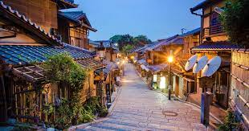
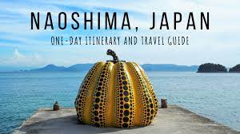

Take a trip Visit Japan !!!!

Visiting Japan is embarking on a captivating journey through a land where tradition and innovation coexist harmoniously. From the serene beauty of ancient temples and tea ceremonies to the neon-lit streets of modern metropolises, Japan offers a diverse and immersive experience. The country's natural wonders, such as cherry blossoms in spring and snow-capped mountains in winter, add to its allure. Japanese cuisine, with its sushi, ramen, and exquisite kaiseki dining, is a delightful adventure for the senses. Beyond the breathtaking landscapes and culinary delights, Japan's warm hospitality and deep-rooted cultural traditions make it a destination that leaves a lasting impression on all who visit.
For A traditional experiences go to Kyoto

Visiting Kyoto is like stepping into a living postcard of Japan's rich cultural heritage. This city, with its stunning temples, historic shrines, and beautifully preserved traditional architecture, offers a glimpse into the country's ancient past. Kyoto's enchanting geisha districts, such as Gion and Ponto-cho, transport you to a bygone era of graceful customs and rituals. The serene gardens, like those at Kinkaku-ji (the Golden Pavilion) and Fushimi Inari Shrine, provide moments of contemplation and natural beauty. Kyoto's culinary scene is equally captivating, with kaiseki dining and matcha tea ceremonies offering a taste of traditional Japanese flavors. With its deep sense of history and reverence for tradition, Kyoto remains a must-visit destination for those seeking a quintessential Japanese experience.
Naoshima is the best for Japan architecture

Naoshima is a serene and artistic escape that transports you to a world of contemporary creativity nestled amid the Seto Inland Sea's natural beauty. This tiny island in Japan is renowned for its unique fusion of art, architecture, and nature. As you explore Naoshima, you'll encounter open-air art installations, museums, and galleries thoughtfully integrated into the island's picturesque landscapes. The Chichu Art Museum, designed by Tadao Ando, is a prime example of architectural brilliance and houses masterpieces by artists like Claude Monet and James Turrell. Naoshima's tranquil beaches and charming villages offer a peaceful contrast to the artistic buzz. It's a destination that invites you to ponder the harmonious relationship between art and environment while enjoying the serenity of island life.
Okinawa and the Southern Islands

Okinawa is like discovering a tropical paradise within Japan. This sun-soaked archipelago boasts pristine beaches with crystal-clear waters that beckon travelers to unwind and soak up the sunshine. But Okinawa offers more than just idyllic coastal getaways; it also carries a unique cultural identity shaped by its distinct history and traditions. The Ryukyuan culture, with its vibrant music, dance, and cuisine, sets Okinawa apart from the mainland. Visitors can explore ancient castle ruins like Shuri Castle, dive into the colorful world of coral reefs, or simply savor the local delicacies like taco rice and goya. Okinawa's welcoming spirit and relaxed atmosphere make it an ideal destination for those seeking both natural beauty and cultural enrichment.
Tokyo, Best for contemporary culture

Tokyo is an exhilarating adventure through a metropolis that seamlessly merges tradition and modernity. The cityscape dazzles with its iconic skyscrapers and neon-lit streets, a testament to its global significance. Yet, amidst the urban frenzy, Tokyo preserves its rich cultural heritage through historic temples, tranquil gardens, and traditional tea ceremonies. The culinary scene is a culinary odyssey, with sushi, ramen, and tempura that tantalize the taste buds. Navigating the city is a breeze thanks to its efficient transportation system, offering access to vibrant neighborhoods like Shibuya, Shinjuku, and Akihabara. Tokyo's vibrant energy and deep-rooted traditions make it an unforgettable destination for travelers seeking a captivating blend of old and new.
interseted in forest bathing, Yakushim might just be the place to go

Yakushima is like stepping into a mystical forest straight out of a fairy tale. This enchanting island, located off the southern coast of Japan, is a UNESCO World Heritage site renowned for its ancient cedar trees, some of which are over 1,000 years old. Hiking through the verdant Yakusugi Land, where these ancient trees reside, is a spiritual journey into nature's grandeur. The lush, primeval forests, shrouded in mist and moss, create an otherworldly ambiance that feels like a living meditation. The island's dramatic landscapes also include cascading waterfalls and rugged coastlines, offering a diverse range of outdoor adventures. Yakushima is an oasis of serenity and natural beauty, making it an ideal retreat for those seeking a deep connection with the natural world.
reflect in Hiroshima
 Hiroshima is a profoundly moving experience that combines historical reflection with hope for a peaceful future. The city is forever marked by the tragic events of August 6, 1945, when an atomic bomb was dropped, ushering in the nuclear age and changing the course of history. The Hiroshima Peace Memorial Park, centered around the iconic Atomic Bomb Dome, stands as a poignant reminder of the devastating consequences of war. Yet, amidst this somber history, Hiroshima radiates resilience and a strong commitment to peace. Visitors can explore the Peace Memorial Museum, which offers a comprehensive account of the city's past and its call for global disarmament. Hiroshima's modern cityscape and vibrant culture exemplify its dedication to rebuilding and moving forward. It's a destination that inspires reflection on the enduring pursuit of peace and the resilience of the human spirit.
Hiroshima is a profoundly moving experience that combines historical reflection with hope for a peaceful future. The city is forever marked by the tragic events of August 6, 1945, when an atomic bomb was dropped, ushering in the nuclear age and changing the course of history. The Hiroshima Peace Memorial Park, centered around the iconic Atomic Bomb Dome, stands as a poignant reminder of the devastating consequences of war. Yet, amidst this somber history, Hiroshima radiates resilience and a strong commitment to peace. Visitors can explore the Peace Memorial Museum, which offers a comprehensive account of the city's past and its call for global disarmament. Hiroshima's modern cityscape and vibrant culture exemplify its dedication to rebuilding and moving forward. It's a destination that inspires reflection on the enduring pursuit of peace and the resilience of the human spirit.